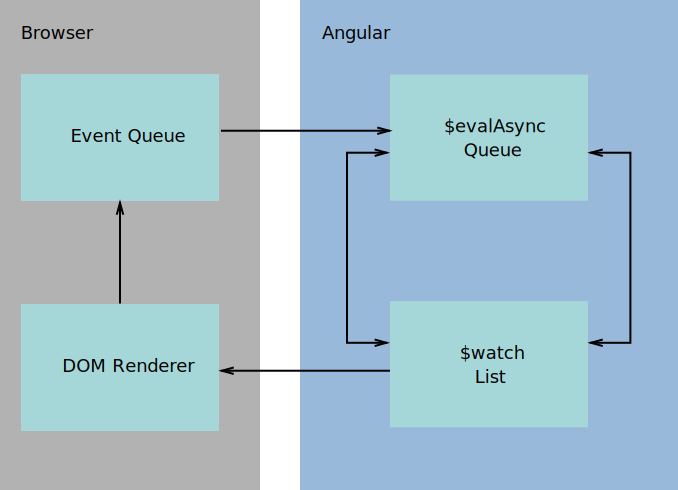

AngularJS Foundations
Workshop

18. Januar 2016
Warum dieser Kurs?
Einstieg in AngularJS ist zwar einfach, aber…
- keine (offiziellen) Konventionen.
- viele verschiedene Ansätze im Netz.
- AngularJS beinhaltet viel "Magic" der man nicht blind vertrauen sollte.
Ziele
- Guidelines und Struktur geben.
- AngularJS Konzepte und deren Anwendungen klären.
- "Magische" Teile von AngularJS durchleuchten.
Setup Workshop Projekt
Schritte um das Projekt zu installieren:
$ git clone https://github.com/matoilic/AngularWorkshop
$ cd AngularWorkshop
$ npm install -g gulp
$ npm install
$ gulp
Übersicht Workshop Projekt
- Abhängigkeiten
- Verzeichnisstrutkur
- Build System
Abhängigkeiten (npm)
Definiert in package.json:
{
"name": "my-package",
"description": "An example package",
"version": "0.0.1",
"devDependencies": {
"gulp": "^3.8.11",
"gulp-connect": "^2.2.0",
"gulp-protractor": "^1.0.0"
},
"dependencies": {
"angular": "^1.4.0",
"angular-resource": "^1.4.0",
"angular-ui-router": "^0.2.15",
"normalize.css": "^3.0.3"
}
}
Top Level Struktur
.git/
node_modules/
src/
.editorconfig
.gitignore
.jshintrc
gulpfile.js
index.html
package.json
protractor.conf.js
webpack.conf.js
AngularJS Struktur
components/
/address-book/
/application/
/welcome-state
/index.js
/welcome-state.js
/welcome-controller.js
/welcome.html
images/
stylesheets/
Standard Projektstruktur
/controllers
/home-controller.js
/other-controller.js
/even-more-controller.js
/services
/home-service.js
/other-service.js
/3rd-service.js
/views
/home.html
/other.html
/more-templates.html

Vorteile fachlicher Aufteilung
- Alle Teile einer Komponente sind unter einem Dach.
- Komponenten sind einfacher wiederverwendbar.
- Die Auswirkungen von Code-Änderungen sind besser nachvollziehbar.
Backend
API-Endpoint
https://nameless-sierra-8010.herokuapp.com/api
API-Browser
https://nameless-sierra-8010.herokuapp.com/explorer
Workflow Automation mit Gulp
gulpfile.js
Default-Task
- connect Startet den Entwicklungsserver.
"test"-Task
- test Startet Protractor end-to-end Tests.
Bundling mit webpack
- Server mit Livereload während der Entwicklung.
- Resource-Bundling für Production.
import ⟺ export
- import
- Importiert die öffentlichen Teile eines Paketes in eine lokale Variable / Referenz.
- export
- Macht Komponententeile zugänglich für andere Module.
Modul-Export
class ExampleController {
// ...
}
export default [
'dependency1',
'dependency2',
ExampleController
];
Modul-Import
import angular from 'angular';
import ExampleController from './example-controller';
const dependencies = [
];
export default angular
.module('example-module', dependencies)
.controller('ExampleController', ExampleController);
AngularJS im Überblick

Angular Modul
Sammlung von Klassen, Funktionen und Objekten.
Neues Modul definieren
angular.module('myApp', []);
Modul 'myApp' referenzieren
angular.module('myApp');
Modul-Laufzeit
angular
.module('myModule', ['ui-router'])
.config(function($stateProvider){})
.run(initializationFn)
.provider('myProvider', function(){})
.controller('myController', '')
Ablauf
- Modul wird mit Dependency 'ui-router' initialisiert
- config() wird ausgeführt
- run() wird ausgeführt
Dependency Injection
- Injector bietet einen Weg Module nach Namen zu referenzieren.
- Jede AngularJS App hat einen Injector.
- Jedes Modul wird nur einmal instanziert.
- Injector löst Dependencies in Funktionen auf.
class MyService {
constructor(dependencyA, dependencyB) {
// Do something with dependencyA
dependencyA.doSomething();
}
}
Dependency Injection
- Achtung: Automatische DI funktioniert nur solange der Code nicht minifiziert ist.
- Besser: Dependencies explizit angeben.
class MyService {
constructor(DependencyA) { }
}
angular
.module('myApp')
.service('MyService', ['DependencyA', MyService]);
Tipp
Mit 'ngStrictDi' explizite DI Annotationen forcieren.
<body ng-app="myApp" ng-strict-di="true">
Views (Templates)
HTML Dateien.
<div>
<h1>Address book</h1>
<p>
Hello World.
</p>
</div>
Templates müssen immer ein Root-Element besitzen.
Routing
Verbindet States und ihre Views mit spezifischen URLs.
Beispiel einer Route
function contactListState($stateProvider) {
$stateProvider.state('contactList', {
url: '/contact-list',
templateUrl: 'contact-list.html',
resolve: { }
});
}
angular
.module('ContactList')
.config(['$stateProvider', contactListState]);
ng-route vs ui-router
-
ng-route
- Standard-Komponente von Angular.
- Erlaubt nur einfache Routes und Views.
-
ui-router
- Kann verschachtelte Views darstellen und komplexe States abbilden.
- De-facto Standard.
Empfehlung: immer ui-router verwenden.
Hands-on
Neue Route für Kontaktliste erstellen.
- Neues Modul ContactList (analog 'Welcome') erstellen.
- View Template: contact-list.html.
- Route: /contact-list.

Directives
- Wiederverwendbare UI-Komponenten.
- Erweiterte HTML Tags bzw. Web Components.
- Darf DOM Manipulationen machen.
- Kann HTML Elemente mit neuem Verhalten erweitern.
Beispiele für Direktiven
ng-model
<input type="text" name="searchTerm" ng-model="searchTerm"/>
<p>{{ searchTerm }}</p>
ng-class
<p ng-class="{'expanded': textExpanded}">Some content</p>
ng-if
<p ng-if="myController.isShown">Content goes here.</p>
ng-model um den Input einer Variable zuzuweisen.
* Gib die Variable auf der Seite aus.
### Bonus
* Falls der Input Wert 'spin' ist, soll dem Element eine CSS Klasse mit dem Namen 'spin' hinzugefügt werden (Tipp: ng-class).
Controller
Controller stellen der View Funktionen zur Verfügung und repräsentieren den State der View. Controller agieren als View Model.
Was nicht in den Controller gehört
- Business-Logik.
- State mit anderen Controllern teilen.
- Output formatieren.
Controller definieren
class ContactListController {
constructor($scope, $stateParams) {
}
}
angular
.module('ContactList', [])
.controller('ContactListController', [
'$scope',
'$stateParams',
ContactListController
]);
Controller einer View zuweisen
function contactListState($stateProvider) {
$stateProvider.state('contact-list', {
url: '/contact-list',
templateUrl: 'contact-list.html',
controller: 'ContactListController as $ctrl'
});
}
angular
.module('ContactList')
.config(['$stateProvider', contactListState]);
Hands-on
- Erstelle einen neuen Controller 'ContactListController' im Modul ContactList.
- Definiere einen Array mit den Namen der Kontakte.
- Liste diese Namen in der View auf (siehe: ng-repeat Direktive).
Filter
- Transformieren Werte und Objekte im View Template.
- Sind Chainable durch den Pipe Separator.
Beispiel:
{{ 1434098007198 | date:'shortDate' }}
Hands-on
- Erstelle eine Detailseite für einen Kontakt.
-
Formularfelder für
- Name
- Telefonnummer
- Validiere den Namen (required) und die E-Mail (korrekte E-Mail Adresse).
Scope-Funktionen
- $on
- Registriert einen Event-Listener.
- $emit
- Sendet einen Event die Hierarchie aufwärts bis zum $rootScope.
- $broadcast
- Sendet einen Event die Hierarchie abwärts vom der Quelle aus.
Events

System Events
- $destroy
- Wenn ein scope zerstört wird.
That's it, $destroy ist der einzige…
Scope Vererbung
- $rootScope
- Parent aller Scopes.
- Alle Scopes erben prototypisch von $rootScope bzw. Parent-Scope.
Scope Isolation
- Betrifft Direktiven.
- Der isolierte Child Scope verändert den Parent Scope nicht (ng-if, ng-switch, ng-repeat, ng-view, ng-include).
- Primitives die an eine Direktive mit isoliertem Scope übergeben werden, verlieren das 2-way Binding.
Data Binding
- View
- {{ myController.startDate | date:'simple' }}
- Controller
- this.startDate = new Date();
- Angular kümmert sich automatisch um die Synchronisation zwischen den Daten in HTML und JavaScript und zwar in beide Richtungen. Falls etwas in JS geändert wird, zieht es Angular für das HTML nach und umgekehrt.
Data Binding: Digest Cycle
- Für jedes Objekt welches in einer View verwendet wird, wird eine Funktion in die Watch-List hinzugefügt.
- Sobald der Wert eines Objektes ändert, wird ein $digest Cycle ausgelöst.
- Im $digest Cycle werden alle Objekte auf Änderungen geprüft. Falls es Änderungen gab, wird der Cycle erneut ausgeführt, bis es keine mehr gibt.
- Anschliessend werden die Views neu gerendert.
Digest Cycle
Controller, Scope und controllerAs
Es gibt zwei Varianten wie Controller und Scopes eingesetzt werden können.
- Standard:
- Variablen und Methoden werden direkt auf dem Scope definiert.
- 'controllerAs'
- Controller wird als eigenes Objekt an den Scope übergeben. Variablen und Methoden werden auf dem Controller definiert. Der Controller agiert als View Model.
Beispiel
Route Definition:
function contactListState($stateProvider) {
$stateProvider.state('contact-list', {
templateUrl: 'contact-list.html',
controller: 'ContactListController as contactList'
});
}
angular
.module('ContactList')
.config(['$stateProvider', contactListState]);
View:
<ul>
<li ng-repeat="contact in addressList.contacts">{{ contact.name }}</li>
</ul>
Vorteile von 'controllerAs'
- Einfach nachvollziehbar von wo welche Daten kommen.
- Vereinfachtes Testing von View-Funktionalität.
- Verbesserte Wartbarkeit der Codebasis.
Empfehlung ➾ immer controllerAs verwenden.
Provider
Was ist ein Provider in AngularJS?
AngularJS Provider (oder Services) sind Singleton Objekte, die spezifische Funktionalitäten zur Verfügung stellen und Applikationslogik enthalten.
AngularJS Provider-Typen
- Provider
- Factory
- Service
- Value
- Constant
Provider
- Parent der anderen Service Typen (ausser Constant).
- Konfigurierbar.
- DI Abhängigkeiten im Provider Konstruktor können nur andere Provider oder Constants sein.
- Beispiele: $stateProvider, $httpProvider.
Provider Beispiel
class MyService { /* ... */ }
function MyServiceProvider() {
let timeout = 3000;
this.setTimeout = function(seconds) {
timeout = seconds;
};
this.$get = [function() {
return new MyService(timeout); // will only be called once
}];
}
angular.module('SomeModule').provider('MyService', [MyServiceProvider]);
Factory
Wie Provider, aber ohne Konfiguration.
Factory Beispiel
function TestFactory() {
const thisIsPrivate = 'Private';
function getPrivate() {
return thisIsPrivate;
}
return {
variable: 'This is public',
getPrivate: getPrivate
};
}
angular.module('SomeModule').factory('TestFactory', [TestFactory]);
Service
Wie Factory, aber anstatt einem Objekt definieren wir eine Klasse, die mit 'new' instanziert wird.
Empfehlung ➾ Services gegenüber Factories vorziehen.
Service Beispiel
class HelloService {
constructor() {
// Do some initialization
}
sayHello() {
console.log('Hello!')
}
}
angular.module('SomeModule').service('HelloService', [HelloService]);
Value / Constant
- Ein Value kann alles sein, String, Date, Array, Number oder Object.
- Ideal um statische Daten zu hinterlegen, welche über mehrere Controller, Services etc. hinweg benötigt werden.
- Constants sind auch innerhalb von config Funktionen verfügbar, Values nicht. Das ist der einzige Unterschied.
- Good to know: Constants können trotz des Namens geändert werden.
Constant Beispiel
angular
.module('SomeModule')
.constant('apiBaseUrl', 'https://myhost/api/v1/');
// Wert kann auch ein Javascript Objekt sein:
angular
.module('SomeModule')
.constant('apiSettings', {
baseUrl: 'https://myhost/api/',
apiKey: 'letmein'
});
Hands-on
- Erstelle einen Service "ContactsService" mit der Methode “fetchContacts” der die Inhalte der Kontaktliste unter
https://nameless-sierra-8010.herokuapp.com/api/Contacts zurückgibt. - Verwende dafür den Angular $http Service.
- Ersetze die statische Kontaktliste mit der neuen aus dem Service.
Bonus
- Mach den URL zum API-Endpoint konfigurierbar.
Authentication
Wir müssen alle Routes unzugänglich machen, bis sich der Benutzer eingeloggt hat. Anschliessend sollte der Benutzer zur gewünschten Seite weitergeleitet werden.
Möglichkeit 1
$rootScope.$on('$locationChangeSuccess',
function(event, newUrl, oldUrl, newState, oldState) {
event.preventDefault();
// authenticate
$urlRouter.sync();
}
);
Event wird beim initialen Laden nicht ausgelöst.
Möglichkeit 2
resolve: {
authToken: ['authenticationService', function(authService) {
return authService.authenticate();
}]
}
Auth-Token
$httpProvider.interceptors.push(/* function or string */);
Auth-Token
function myInterceptor() {
return {
request: function(config) {
config.headers.authToken = 'super-secret';
return config;
}
};
}
Hands-on
-
Füge einen Logindialog zur Applikation hinzu.
- POST: /Users/login
- Body-Parameter "email" und "password".
- "data.id"-Property in der Response enthält den Auth-Token.
- Sende den Auth-Token im "Authorization"-Header mit.
- Du kannst eine Library wie angular-visor verwenden oder alles selbst implementieren.
Testing
- End to end Testing mit Protractor.
- Tests laufen gegen die Applikation im Browser.
- Macht das Testen von User Interaktionen möglich.
Setup Testing
Protractor installieren
npm install -g protractor
Selenium installieren & starten
webdriver-manager update
webdriver-manager start
Beispiel Protractor Test
describe('Angular Workshop Address Book', function() {
it(
'should show a contact detail page when a contact was selected',
function() {
browser.get('http://localhost:8088/');
element(by.model('contacts')).get(1).click();
expect(browser.getCurrentUrl()).toContain('/detail/1');
}
);
});
Custom Directives
Directive Definition Object
function testDirective(injectables) {
return {
priority: 0,
replace: false,
template: '<div></div>',
transclude: false,
restrict: 'A',
scope: false,
controller: '',
controllerAs: 'stringIdentifier',
bindToController: false,
require: 'siblingDirectiveName', // or // ['^parentDirectiveName', '?optionalDirectiveName', '?^optionalParent'],
compile: function compile(tElement, tAttrs, transclude) { },
link: function($scope, element, attrs, controllers, transclude) { }
};
}
angular.module('myApp').directive('testDirective', [testDirective]);
Directive Definition Object: Scope
scope: {
myProperty: '=?',
otherProperty: '&',
someAttribute: '@',
oneWayProtery: '<' // new in 1.5
}
Beispiel Direktive
function mouseInteractionDirective(injectables) {
return {
restrict: 'A',
link: function ($scope, element) {
$scope.mouseInteractionController.initialize(element);
}
};
}
angular
.module('myApp')
.directive('mouseInteraction', [mouseInteractionDirective]);
Custom Components
Neu ab Angular 1.5.
docs.angularjs.org/guide/component
Component Definition Object
function customComponent(injectables) {
return {
template: '<div></div>',
transclude: false,
bindings: {
myAttribute: '='
},
controller: 'CustomComponentController', // instantiated as $ctrl
require: {
parent: '^parentComponent'
}
};
}
angular.module('myApp').directive('testDirective', [testDirective]);
$onInit Lifecycle Callback als Ersatz für link.
Component oder Directive?
- Component für Elemente.
- Directive für Attribute.
Hands-on
In der Kontaktliste soll jeder Kontakt ein automatisch generiertes Profilbild von Robohash.org erhalten. Erstelle eine neue Komponente, die Anhand der E-Mail Adresse ein Bild ausgibt.
Robohash-API
https://robohash.org/{{ email }}
AngularJS in Grossprojekten
- Struktur
- Tooling: SystemJS, ES6 (via BabelJS), Unit Testing, e2e Testing
- Log service
- Continuous Integration
- Maven Integration
Performance
Tipps für ng-model
Definiere wie oft der $digest Cycle angestossen wird.
ng-model-options
<input
ng-model="user.name"
ng-model-options="{ updateOn: 'default blur', debounce: { 'default': 300, 'blur': 0 } }"
type="text"
>
Tipps für Data-Bindings
Two-way Binding nur verwenden, wo es wirklich nötig ist.
In den meisten Fällen reicht ein one-time Binding aus.
{{ ::contact.name }}
Tipps für ng-repeat
ng-repeat immer mit track-by verwenden.
➾ ng-repeat entfernt und kreiert die DOM Nodes bei jedem Refresh.
Fragen?